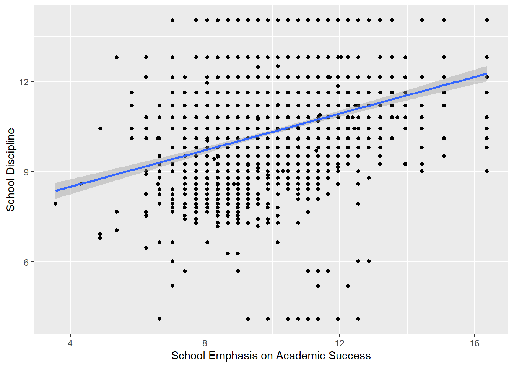
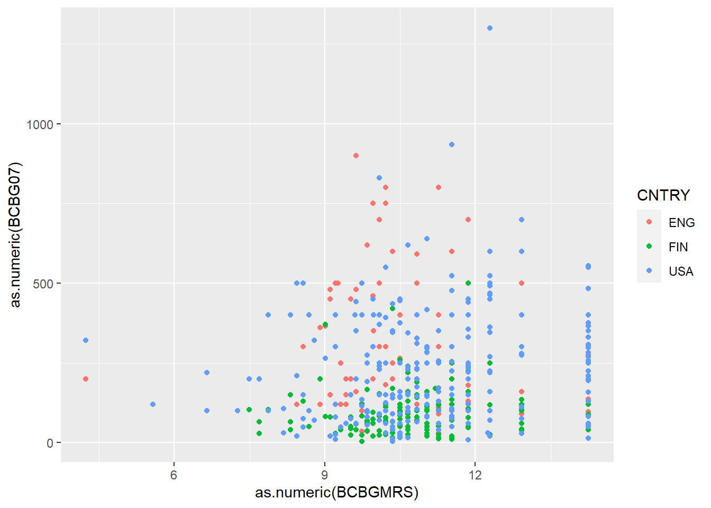
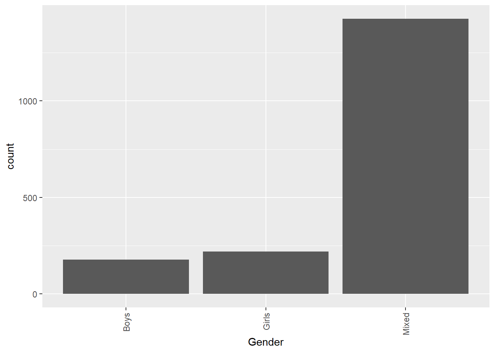
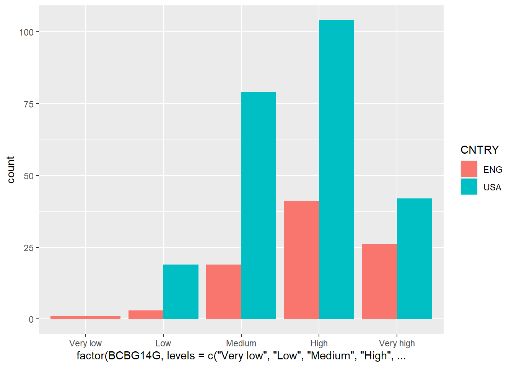
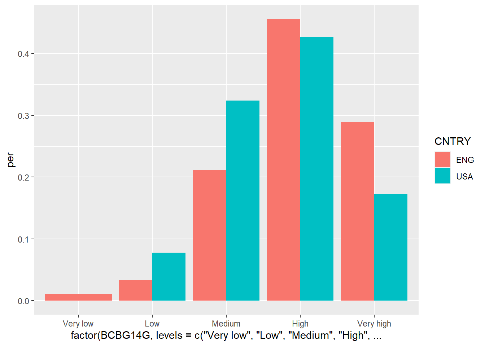

CRESTEM-R ANSWERS
an introduction to analysing educational data
1 Introduction
2 Getting set up
3 Starting to code
3.1 Objects and instructions
Type the two examples above into your RStudio script file and check that they work. Adapt them to say your full name and give the number of MinutesInADay
[1] "Sheila"[1] 14403.1.1 Questions
what are the outputs of the following code snippets/what do they do? One of the examples might not output anything, why is that? Type the code into your script file to check your answers:
code example 1
code example 2
code example 3
The above code doesn’t output anything as there isn’t a print statement, let’s add one:
3.2 Naming objects
3.2.1 Questions
Which of these are valid R object names:
-
my_Number- VALID -
my-Number- INVALID as it uses a hyphen -
myNumber!- INVALID as it uses an exclaimation mark -
first name- INVALID as it uses a space -
FIRSTname- VALID -
i- VALID -
3names- INVALID as it starts with a number -
names3- VALID
3.4 Data types
3.4.1 Questions
- Can you spot the error(s) in this code and fix them so it outputs: “July is month 7”?
[1] "July"[1] "is"[1] "month"[1] 7- Can you spot the error(s) in this code and fix it?
a <- 7
b <- 8 #1 b is numeric so drop the speech marks
c <- 3 #2 the arrow needs to be together, remove the space
print(a + b + c)[1] 18- Can you spot the error(s) in this code and fix it?
3.5 Stitching things together
3.5.1 Questions
- What are the five errors in this code:
place <- "Nantwich" #1 missing speech mark
pop <- 17424 #2 numbers can't have commas
print(paste(place, "has a population of" , pop))[1] "Nantwich has a population of 17424"- Write code that stores
lengthandwidthof a rectangular table and calculates and prints the totalareain the format:
3.6 Vectors
3.6.1 Questions
- Can you spot the four problems with this code:
nums <- c(1,2,3,4,7,2,2)
#1 a vector is declared using c(), not v()
#2 3 should be numeric, so no need for speech marks
# (though technically R would do this conversion for you?!)
sum(nums)[1] 21[1] 3# return a vector of all numbers greater than 2
nums[nums >= 2] #3 to pick items from another vector, use square brackets[1] 2 3 4 7 2 2- Create a vector to store the number of glasses of water you have drunk for each day in the last 7 days. Work out:
- the average number of glasses for the week,
- the total number of glasses,
- the number of days where you drank less than 2 glasses (feel free to replace water with your own tipple: wine, coffee, tea, coke, etc.)
- Using the vectors below, create a program that will find out the average grade for females taking English:
3.7 Summary questions
-
Describe three datatypes that you can use in your program?
- numeric for numbers
- character for words/strings
- logical for boolean values
-
What are two reasons that you might use comments?
- to make your code more understandable
- to disable bits of code that you might want to reenable later
-
Which object names are valid?
- my_name - VALID
- your name - INVALID use of space
- our-name - INVALID use of hyphen
- THYname - VALID
Can you spot the seven errors in this code:
stu1 <- 12
stu2 <- 13 #1 2stu to stu2, cannot start name with a number
stu3 <- 15 #2 no need for speech marks on "15"
# now work out the average of the ages
avg <- (stu1 + stu2 + stu3) / 3 #3 broken arrow < - #4 capital letter on Stu1
#5 missing paste()
#6 + should be comma ,
#7 missing speech marks on years old
print(paste("students are, on average, ", avg, "years old"))[1] "students are, on average, 13.3333333333333 years old"- Write a program that stores objects for your
firstNameandsecondName.Make it print out:
# declare separate objects to store the first and last name
firstName <- "Mike"
secondName <- "Smith"
# I use the paste here to concatenate the name parts together
print(paste("Hello", firstName, secondName))[1] "Hello Mike Smith"Add comments to the code from the previous question explain how it works
Calculate the number of seconds in a week and print out
there are [num] seconds in a week, where [num] is a number
[1] "there are 604800 seconds in a week"- [Extension] You have been given the vectors below that store distances and times between locations in England.
- convert all the times in seconds
- convert the distances into kilometres
- find times shorter than 3 hours
- calculate and print the origin and destination of trips over 150 miles
origin <- c("Manchester", "London", "Cardiff", "Colchester", "Canterbury")
dest <- c("London", "Cardiff", "Colchester", "Canterbury", "Manchester")
time <- c(258, 233, 253, 131, 266) # in minutes
dist <- c(200, 149, 224, 94, 308) # in miles
time * 60 * 60[1] 928800 838800 910800 471600 957600[1] 320.0 238.4 358.4 150.4 492.8[1] FALSE FALSE FALSE TRUE FALSE[1] "Manchester London" "Cardiff Colchester" "Canterbury Manchester"- [Extension] Calculate the number of seconds since 1970.
- [Extension] find the
minimum andmaximum times and distances in Question 8, above.
4 The tidyverse
4.1 Working with datasets
4.1.1 Loading data from the web
4.1.2 Loading data from your computer
4.1.3 Exploring dataframes
4.1.4 Questions
- Can you spot the five errors in this code:
library(tidyverse) #1 spelling mistake on tidyverse
library(readxl)
#2 the first slash was a back slash
#3 missing speech mark from "Results"
results <- read_excel("C:/Users/Peter/Google Drive/Kings/R intro/code/dfe_data.xlsx", "Results")
schools <- read_excel("C:/Users/Peter/Google Drive/Kings/R intro/code/dfe_data.xlsx", "Schools") #4 missing tail on the assignment arrow <-
sum(results$Entries, na.rm=TRUE) #5 £ used instead of a dollar # 6 missing na.rm[1] 9336102- What is the largest
Total_studentssize?
- How many different types of subject
Descriptionare there?
[1] "Additional Mathematics FSMQ"
[2] "Modern Greek"
[3] "Art & Design (Fine Art)"
[4] "Chinese"
[5] "Design & Technology"
[6] "English Language"
[7] "English Literature"
[8] "French"
[9] "Geography"
[10] "German"
[11] "Classical Greek"
[12] "Latin"
[13] "Physics"
[14] "Religious Studies"
[15] "Drama & Theatre Studies"
[16] "Physical Education/Sports Studies"
[17] "Music performance: Group"
[18] "Classical Civilisation"
[19] "Mathematics"
[20] "Russian"
[21] "Business Studies"
[22] "Sports Studies"
[23] "Arabic"
[24] "Biology"
[25] "Chemistry"
[26] "Computer Studies/Computing"
[27] "Economics"
[28] "Applied Engineering"
[29] "D&T Food Technology"
[30] "History"
[31] "Italian"
[32] "Music"
[33] "Art & Design (Photography)"
[34] "Sociology"
[35] "Spanish"
[36] "Science: Double Award"
[37] "Persian"
[38] "Portuguese"
[39] "Turkish"
[40] "Health Studies"
[41] "Speech & Drama"
[42] "Art & Design"
[43] "Business Studies:Single"
[44] "Social Science: Citizenship"
[45] "Media/Film/Tv Studies"
[46] "Engineering Studies"
[47] "Applied ICT"
[48] "Dance"
[49] "Art Techniques/Practical Art"
[50] "Tourism"
[51] "Small Business Management"
[52] "Music Technology (Electronic)"
[53] "Music Studies (General)"
[54] "Film Studies"
[55] "Art & Design (3d Studies)"
[56] "Polish"
[57] "Psychology"
[58] "Computer Architecture / Systems"
[59] "Personal Finance"
[60] "Art & Design (Textiles)"
[61] "Hairdressing Services"
[62] "Ancient History"
[63] "Personal Health"
[64] "Gujarati"
[65] "Dance: General"
[66] "Sports / Movement Science"
[67] "Food Technology"
[68] "Hospitality / Catering Studies"
[69] "Childcare Skills"
[70] "Punjabi"
[71] "Statistics"
[72] "Urdu"
[73] "Computer Appreciation / Introduction"
[74] "Multimedia"
[75] "Building / Construction Operations (General / Combined)"
[76] "Modern Hebrew"
[77] "Other Classical Languages"
[78] "Japanese"
[79] "Manufacturing Engineering"
[80] "Animal Care (Non-Agricultural)"
[81] "Bengali"
[82] "Art & Design (Graphics)"
[83] "Astronomy"
[84] "Retailing"
[85] "Engineering Design"
[86] "Electronics"
[87] "Town Planning"
[88] "Beauty Care / Services"
[89] "Theory of Music"
[90] "Computing and IT Advanced Technician"
[91] "Interactive Video"
[92] "D&T Textiles Technology"
[93] "Graphic Design"
[94] "Maintenance Engineering"
[95] "Government & Politics"
[96] "Arts & Culture Administration"
[97] "D&T Engineering"
[98] "Dutch"
[99] "Automotive Engineering"
[100] "Art & Design (Critical Studies)"
[101] "Geology"
[102] "Critical Thinking"
[103] "Mathematics (Further)"
[104] "D&T Product Design"
[105] "Additional Mathematics"
[106] "Saxophone Jazz"
[107] "Creative Writing"
[108] "Accounting/Finance"
[109] "Land Based Ops"
[110] "Flute"
[111] "Guitar"
[112] "English Language & Literature"
[113] "Logic/ Philosophy"
[114] "General Studies"
[115] "Environmental Science"
[116] "Law"
[117] "Mathematics (Statistics)"
[118] "Drums"
[119] "Trumpet"
[120] "Saxophone"
[121] "Cello"
[122] "Music Technology"
[123] "Bassoon"
[124] "Clarinet"
[125] "Double Bass"
[126] "Drum Kit"
[127] "French Horn"
[128] "Horn Tenor"
[129] "Piano: Solo"
[130] "Trombone" [1] 130- What’s the average value for free school meals (
FSM)?
# This seems very low, it should be about ~18%,
# this is because it doesn't use NA values, the
# dfe set data for closed schools and private schools to 0(?!)
mean(schools$FSM)[1] 0.0832842This seems very low, it should be about ~18%, this is because it doesn’t use NA values, the dfe set data for closed schools and private schools to 0(?!)
- What
Regionvalues exist for England?
[1] "London" "South East"
[3] "Yorkshire and the Humber" "North West"
[5] "East of England" "West Midlands"
[7] "North East" "South West"
[9] "East Midlands" "Wales (pseudo)"
[11] "Not Applicable" Load the
resultsandschoolstables and explore the data from the environment panel.[Extension] What are the largest, minimum and average school cohort sizes? (hint, you’ll need to add two fields on the
schoolstable) [Super Extension if you’ve done the vector section above] can you get R to output the name of the largest school only using vectors and R?
[1] 3628[1] 0[1] 361.3546# don't worry, we're going to learn about much easier ways of doing this!
unique(
schools$Name[
schools$NumberOfBoys + schools$NumberOfGirls ==
max(schools$NumberOfBoys + schools$NumberOfGirls,
na.rm = TRUE)])[1] NA "Lycee Francais Charles de Gaulle"# the easier way is using dplyr, see chapter 4.
schools %>%
mutate(total = NumberOfBoys + NumberOfGirls) %>%
filter(total == max(total, na.rm=TRUE)) %>%
select(Name)# A tibble: 1 x 1
Name
<chr>
1 Lycee Francais Charles de Gaulle4.2 Piping
4.2.1 Group and summarise
- Can you spot the six errors in this code:
starwars %>% #1 missing pipe %>%
group_by(species) %>% #2 species shouldn't be in speech marks
summarise(avg_weight = mean(mass, na.rm=TRUE))
#3 this is an assignment, so no need for double =
#4 lower case TRUE in na.rm needs to be upper
#5 rm.na should be na.rm
#6 trailing pipe command %>% needs to be removed# A tibble: 38 x 2
species avg_weight
<chr> <dbl>
1 Aleena 15
2 Besalisk 102
3 Cerean 82
4 Chagrian NaN
5 Clawdite 55
6 Droid 69.8
7 Dug 40
8 Ewok 20
9 Geonosian 80
10 Gungan 74
# ... with 28 more rows- Using the
schoolstable, find the maximumFSMvalue for eachLA
# A tibble: 184 x 2
LA max_FSM
<chr> <dbl>
1 Barking and Dagenham 0.376
2 Barnet 0.553
3 Barnsley 0.58
4 Bath and North East Somerset 0.549
5 Bedford 0.463
6 Bexley 0.629
7 BFPO Overseas Establishments 0
8 Birmingham 0.76
9 Blackburn with Darwen 0.632
10 Blackpool 0.622
# ... with 174 more rows- Using the
schoolstable, find the meanFSMfor eachOfstedRating
# A tibble: 7 x 2
OfstedRating mean_FSM
<chr> <dbl>
1 Good 0.151
2 Inadequate 0
3 Outstanding 0.108
4 Requires improvement 0.178
5 Serious Weaknesses 0.204
6 Special Measures 0.202
7 <NA> 0.0191- Using the schools table, find the mean
FSMfor eachLA, also grouping by whether the school isOpen
# A tibble: 437 x 3
# Groups: LA [184]
LA Open mean_FSM
<chr> <chr> <dbl>
1 Barking and Dagenham Closed 0.0150
2 Barking and Dagenham Open 0.155
3 Barnet Closed 0.00905
4 Barnet Open 0.102
5 Barnsley Closed 0.0218
6 Barnsley Open 0.191
7 Bath and North East Somerset Closed 0.0385
8 Bath and North East Somerset Open 0.113
9 Bedford Closed 0.0187
10 Bedford Open 0.116
# ... with 427 more rows- [Extension] Using the results table, find the total number of students entering exams by
School_type.
results %>%
# we have to include School_type here to avoid
# losing it in the second summarise command
group_by(ID, School_type) %>%
summarise(sch_entries = max(Total_students)) %>%
group_by(School_type) %>%
summarise(total = sum(sch_entries))# A tibble: 19 x 2
School_type total
<chr> <dbl>
1 AC 103116
2 ACC 271197
3 ACCS 1734
4 ACS 578
5 CTC 578
6 CY 64752
7 CYS 3334
8 F 9021
9 FD 31793
10 FDS 733
11 FESI 1100
12 FS 121
13 FSS 1223
14 FUTC 3733
15 IND 47727
16 INDSPEC 2246
17 NMSS 275
18 VA 37253
19 VC 55884.2.2 Select, filter and mutate
Adjust the above code to find all schools where over 60% of students take German, or another subject of your choice.
# we can find results for German OR Italian
results %>%
filter(Description == "German" | Description == "Italian") %>%
filter(Grade == "Total number entered") %>%
filter(Qualification == "GCSE (9-1) Full Course") %>%
select(ID, School, Total_students,Description, Entries) %>%
mutate(per = Entries/Total_students) %>%
filter(per > 0.6)- Predict what this code does:
It finds the average student size of pupil referral units by gender of school and gender of student.
schools %>%
filter(Open == "Open") %>%
filter(TypeOfEstablishment == "Pupil referral unit") %>%
group_by(Gender) %>%
summarise(n = n(),
average = mean(NumberOfBoys + NumberOfGirls, na.rm = TRUE),
average_boys = mean(NumberOfBoys, na.rm = TRUE),
average_girls = mean(NumberOfGirls, na.rm = TRUE))# A tibble: 2 x 5
Gender n average average_boys average_girls
<chr> <int> <dbl> <dbl> <dbl>
1 Girls 1 15 0 15
2 Mixed 202 50.4 36.2 14.2- What are the six errors in this code:
schools %>% #1 missing pipe
#2 double == for comparison; #3 capital B in Boys
filter(Gender == "Boys") %>%
#4 filter rather than fitler; #5 speech marks around "Free schools"
filter(TypeOfEstablishment == "Free schools") %>%
summarise(average = mean(NumberOfBoys, na.rm = TRUE)) #6 missing na.rm = TRUE# A tibble: 1 x 1
average
<dbl>
1 491.- Display (
Select) only theID,LA,Gender,OfstedRatingfrom a school
# A tibble: 48,354 x 4
ID LA Gender OfstedRating
<dbl> <chr> <chr> <chr>
1 100000 City of London Mixed Outstanding
2 100001 City of London Girls <NA>
3 100002 City of London Mixed <NA>
4 100003 City of London Boys <NA>
5 100004 Camden Mixed <NA>
6 100005 Camden Mixed Outstanding
7 100006 Camden Mixed Good
8 100007 Camden Mixed Good
9 100008 Camden Mixed Good
10 100009 Camden Mixed Good
# ... with 48,344 more rows- Show all the Open schools that have exactly
400girls.
# A tibble: 8 x 19
ID LA Name TypeOfEstablish~ EstablishmentGr~ Open Phase Gender
<dbl> <chr> <chr> <chr> <chr> <chr> <chr> <chr>
1 103858 Dudley The ~ Community school Local authority~ Open Seco~ Mixed
2 104835 St. Helens St C~ Voluntary aided~ Local authority~ Open Seco~ Mixed
3 106271 Tameside St T~ Voluntary aided~ Local authority~ Open Seco~ Mixed
4 119835 Lancashire Kirk~ Other independe~ Independent sch~ Open Not ~ Mixed
5 135313 Rochdale St A~ Academy sponsor~ Academies Open Seco~ Mixed
6 137453 North Linco~ The ~ Academy convert~ Academies Open Seco~ Mixed
7 142570 Birmingham High~ Academy sponsor~ Academies Open Prim~ Mixed
8 142853 North Somer~ St K~ Academy convert~ Academies Open Seco~ Mixed
# ... with 11 more variables: Religion <chr>, AdmissionsPolicy <chr>,
# NumberOfBoys <dbl>, NumberOfGirls <dbl>, FSM <dbl>, OfstedLastInsp <dttm>,
# Postcode <chr>, Region <chr>, Easting <dbl>, Northing <dbl>,
# OfstedRating <chr>- Filter all the schools that got
Outstandingas anOfstedRating, display theID,Name,FSMandTypeOfEstablishment, and arrange them by descendingFSM.
schools %>%
filter(OfstedRating == "Outstanding") %>%
select(ID, Name, FSM, TypeOfEstablishment) %>%
arrange(desc(FSM))# A tibble: 4,586 x 4
ID Name FSM TypeOfEstablishment
<dbl> <chr> <dbl> <chr>
1 135010 Sutton Tuition and Reintegration Service 1 Pupil referral unit
2 139541 Courtyard AP Academy 0.929 Academy alternative~
3 100643 Turney Primary and Secondary Special School 0.875 Foundation special ~
4 131598 Ian Mikardo School 0.811 Community special s~
5 107589 William Henry Smith School 0.778 Non-maintained spec~
6 102957 The Limes College 0.759 Pupil referral unit
7 115450 Wells Park School 0.736 Community special s~
8 135558 Hawkswood Primary PRU 0.692 Pupil referral unit
9 141582 St Silas Church of England Primary School 0.692 Academy converter
10 100469 Samuel Rhodes MLD School 0.677 Community special s~
# ... with 4,576 more rows- Count the number (
n()) ofOpenschools that have anFSMnumber of over0.95(You don’t have to usesummarise, but it helps)
# A tibble: 1 x 1
n
<int>
1 7# A tibble: 1 x 1
n
<int>
1 7[1] 7- How many
Openschools in each (group_by)Regionhave more than2000students?
# the order of mutate and filter doesn't matter here,
# but group_by and summarise do!
schools %>%
group_by(Region) %>%
mutate(total_students = NumberOfBoys + NumberOfGirls) %>%
filter(Open == "Open",
total_students > 2000) %>%
summarise(n=n())# A tibble: 8 x 2
Region n
<chr> <int>
1 East Midlands 5
2 East of England 3
3 London 12
4 North East 1
5 South East 9
6 South West 3
7 West Midlands 2
8 Yorkshire and the Humber 6# alternatively, we can do without the mutate:
schools %>%
group_by(Region) %>%
filter(Open == "Open",
NumberOfBoys + NumberOfGirls > 2000) %>%
summarise(n=n())# A tibble: 8 x 2
Region n
<chr> <int>
1 East Midlands 5
2 East of England 3
3 London 12
4 North East 1
5 South East 9
6 South West 3
7 West Midlands 2
8 Yorkshire and the Humber 6- Count (
summarise) the number of schools, grouped as bothOpenandClosedunder eachOfstedRating, make theOpenresults appear at the top of the table. Output the result to an object and explore it in the Environment area.
# A tibble: 21 x 3
OfstedRating Open n
<chr> <chr> <int>
1 <NA> Proposed to open 48
2 Good Open, but proposed to close 4
3 Outstanding Open, but proposed to close 1
4 Requires improvement Open, but proposed to close 16
5 Serious Weaknesses Open, but proposed to close 16
6 Special Measures Open, but proposed to close 21
7 <NA> Open, but proposed to close 2
8 Good Open 13915
9 Inadequate Open 107
10 Outstanding Open 3511
# ... with 11 more rows- [Extension] What’s the average
FSMrating for eachGenderof school in eachRegion? Arrange the results so the most impoverished area appears first.
schools %>%
group_by(Region, Gender) %>%
filter(Open == "Open") %>%
summarise(mean_FSM = mean(FSM, na.rm=TRUE)) %>%
ungroup() %>%
arrange(desc(mean_FSM))# A tibble: 48 x 3
Region Gender mean_FSM
<chr> <chr> <dbl>
1 North East Mixed 0.215
2 North West Mixed 0.173
3 London Mixed 0.162
4 West Midlands Mixed 0.161
5 Yorkshire and the Humber Mixed 0.159
6 West Midlands Boys 0.139
7 East Midlands Mixed 0.135
8 South West Boys 0.134
9 North East Boys 0.124
10 South West Mixed 0.122
# ... with 38 more rows4.2.3 Renaming columns
4.2.4 Arranging results
4.2.5 Questions
- Predict what this code does:
schools %>%
filter(Open == "Open") %>%
filter(TypeOfEstablishment == "Pupil referral unit") %>%
group_by(Gender) %>%
summarise(n = n(),
average = mean(NumberOfBoys + NumberOfGirls, na.rm = TRUE),
average_boys = mean(NumberOfBoys, na.rm = TRUE),
average_girls = mean(NumberOfGirls, na.rm = TRUE))# A tibble: 2 x 5
Gender n average average_boys average_girls
<chr> <int> <dbl> <dbl> <dbl>
1 Girls 1 15 0 15
2 Mixed 202 50.4 36.2 14.2- What are the 6 errors in this code:
schools %>% #1 missing pipe
#2 double == for comparison; #3 capital B in Boys
filter(Gender == "Boys") %>%
#4 filter rather than fitler; #5 speech marks around "Free schools"
filter(TypeOfEstablishment == "Free schools") %>%
summarise(average = mean(NumberOfBoys, na.rm = TRUE)) #6 missing na.rm = TRUE# A tibble: 1 x 1
average
<dbl>
1 491.- Display (
Select) only theID,LA,Gender,OfstedRatingfrom a school
# A tibble: 48,354 x 4
ID LA Gender OfstedRating
<dbl> <chr> <chr> <chr>
1 100000 City of London Mixed Outstanding
2 100001 City of London Girls <NA>
3 100002 City of London Mixed <NA>
4 100003 City of London Boys <NA>
5 100004 Camden Mixed <NA>
6 100005 Camden Mixed Outstanding
7 100006 Camden Mixed Good
8 100007 Camden Mixed Good
9 100008 Camden Mixed Good
10 100009 Camden Mixed Good
# ... with 48,344 more rows- Show all the Open schools that have exactly
400girls.
# A tibble: 11 x 19
ID LA Name TypeOfEstablish~ EstablishmentGr~ Open Phase Gender
<dbl> <chr> <chr> <chr> <chr> <chr> <chr> <chr>
1 101857 Liverpool The ~ Academy sponsor~ Academies Clos~ Seco~ Mixed
2 103858 Dudley The ~ Community school Local authority~ Open Seco~ Mixed
3 104835 St. Helens St C~ Voluntary aided~ Local authority~ Open Seco~ Mixed
4 106271 Tameside St T~ Voluntary aided~ Local authority~ Open Seco~ Mixed
5 106947 Rotherham Clif~ Community school Local authority~ Clos~ Seco~ Mixed
6 119835 Lancashire Kirk~ Other independe~ Independent sch~ Open Not ~ Mixed
7 135313 Rochdale St A~ Academy sponsor~ Academies Open Seco~ Mixed
8 135622 Sunderland Acad~ Academy sponsor~ Academies Clos~ All-~ Mixed
9 137453 North Linc~ The ~ Academy convert~ Academies Open Seco~ Mixed
10 142570 Birmingham High~ Academy sponsor~ Academies Open Prim~ Mixed
11 142853 North Some~ St K~ Academy convert~ Academies Open Seco~ Mixed
# ... with 11 more variables: Religion <chr>, AdmissionsPolicy <chr>,
# NumberOfBoys <dbl>, NumberOfGirls <dbl>, FSM <dbl>, OfstedLastInsp <dttm>,
# Postcode <chr>, Region <chr>, Easting <dbl>, Northing <dbl>,
# OfstedRating <chr>- Filter all the schools that got
Outstandingas anOfstedRating, display theID,Name,FSMandTypeOfEstablishment.
# A tibble: 4,586 x 4
ID Name FSM TypeOfEstablish~
<dbl> <chr> <dbl> <chr>
1 100000 Sir John Cass's Foundation Primary School 0.112 Voluntary aided~
2 100005 Thomas Coram Centre 0.338 Local authority~
3 100020 Primrose Hill School 0.238 Community school
4 100022 Richard Cobden Primary School 0.357 Community school
5 100023 Torriano Primary School 0.298 Community school
6 100025 Gospel Oak Primary School 0.266 Community school
7 100027 Eleanor Palmer Primary School 0.085 Community school
8 100028 Christ Church Primary School, Hampstead 0.041 Voluntary aided~
9 100033 Holy Trinity and Saint Silas CofE Primary Scho~ 0.181 Voluntary aided~
10 100034 Kentish Town Church of England Primary School 0.278 Voluntary aided~
# ... with 4,576 more rows- Count the number (
n()) ofOpenschools that have anFSMnumber of over0.95(You don’t have to usesummarise, but it helps)
# A tibble: 1 x 1
total
<int>
1 7# A tibble: 1 x 1
n
<int>
1 7[1] 7- How many
Openschools in each (group_by)Regionhave more than2000students?
# the order of mutate and filter doesn't matter here,
# but group_by and summarise do!
schools %>%
group_by(Region) %>%
mutate(total_students = NumberOfBoys + NumberOfGirls) %>%
filter(Open == "Open",
total_students > 2000) %>%
summarise(n=n())# A tibble: 8 x 2
Region n
<chr> <int>
1 East Midlands 5
2 East of England 3
3 London 12
4 North East 1
5 South East 9
6 South West 3
7 West Midlands 2
8 Yorkshire and the Humber 6# alternatively, we can do without the mutate:
schools %>%
group_by(Region) %>%
filter(Open == "Open",
NumberOfBoys + NumberOfGirls > 2000) %>%
summarise(n=n())# A tibble: 8 x 2
Region n
<chr> <int>
1 East Midlands 5
2 East of England 3
3 London 12
4 North East 1
5 South East 9
6 South West 3
7 West Midlands 2
8 Yorkshire and the Humber 6- Count (
summarise) the number of schools, grouped as bothOpenandClosedunder eachOfstedRating, make theOpenresults appear at the top of the table. Output the result to an object and explore it in the Environment area.
`summarise()` has grouped output by 'OfstedRating'. You can override using the
`.groups` argument.# A tibble: 21 x 3
OfstedRating Open n
<chr> <chr> <int>
1 <NA> Proposed to open 48
2 Good Open, but proposed to close 4
3 Outstanding Open, but proposed to close 1
4 Requires improvement Open, but proposed to close 16
5 Serious Weaknesses Open, but proposed to close 16
6 Special Measures Open, but proposed to close 21
7 <NA> Open, but proposed to close 2
8 Good Open 13915
9 Inadequate Open 107
10 Outstanding Open 3511
# ... with 11 more rows- [Extension] What’s the average
FSMrating for eachGenderof school in eachRegion?arrangethe results so the most impoverished area appears first.
schools %>%
group_by(Region, Gender) %>%
filter(Open == "Open") %>%
summarise(mean_FSM = mean(FSM, na.rm=TRUE)) %>%
ungroup() %>%
arrange(desc(mean_FSM))`summarise()` has grouped output by 'Region'. You can override using the
`.groups` argument.# A tibble: 48 x 3
Region Gender mean_FSM
<chr> <chr> <dbl>
1 North East Mixed 0.215
2 North West Mixed 0.173
3 London Mixed 0.162
4 West Midlands Mixed 0.161
5 Yorkshire and the Humber Mixed 0.159
6 West Midlands Boys 0.139
7 East Midlands Mixed 0.135
8 South West Boys 0.134
9 North East Boys 0.124
10 South West Mixed 0.122
# ... with 38 more rows4.3 Joing tables
4.4 Saving data
4.5 Summary questions
- Work out how many schools are in each country
CNTRY.
# A tibble: 11 x 2
CNTRY n
<chr> <int>
1 ENG 136
2 FIN 154
3 FRA 150
4 HKG 136
5 IRL 149
6 ISR 157
7 NOR 157
8 RUS 204
9 SWE 150
10 TUR 181
11 USA 273- For only those headteachers that have a masters or equivalent degree qualification (
BCBG21B), what is the average number of years they have been in their school (BCBG19)?
# A tibble: 1 x 1
avg_years
<dbl>
1 5.80- For the students in each country: What is the average and median instructional time in hours (calculated from
BCBG06B), in a typical day? Can you arrange the results so we find the hardest working country? HINT, you might want to mutateBCBG06Bto make itas.numeric().
TIMSS %>%
group_by(CNTRY) %>%
mutate(BCBG06B = as.numeric(BCBG06B)) %>%
summarise(mean_teaching = mean(BCBG06B/60, na.rm=TRUE),
median_teaching = median(BCBG06B/60, na.rm=TRUE)) %>%
arrange(desc(median_teaching))# A tibble: 11 x 3
CNTRY mean_teaching median_teaching
<chr> <dbl> <dbl>
1 FRA 6.27 6.42
2 USA 6.39 6.38
3 IRL 5.83 6
4 HKG 5.57 5.5
5 ISR 5.40 5.25
6 ENG 5.20 5
7 SWE 5.15 5
8 TUR 5.33 4.67
9 NOR 4.77 4.6
10 FIN 4.81 4.5
11 RUS 4.53 4.5 - For each country, what percentage of their schools have students with a
Very highdesire to do well in school (BCBG14I)? One of the countries is missing, why?
TIMSS %>%
group_by(CNTRY) %>%
mutate(total_schools = n()) %>%
filter(BCBG14I == "Very high") %>%
summarise(do_well = 100*(n() / unique(total_schools)))# A tibble: 10 x 2
CNTRY do_well
<chr> <dbl>
1 ENG 15.4
2 FIN 3.25
3 FRA 7.33
4 HKG 7.35
5 IRL 17.4
6 ISR 8.92
7 NOR 7.64
8 SWE 12.7
9 TUR 8.29
10 USA 8.06# we can also work out the percentage for all the responses to this question
TIMSS %>%
group_by(CNTRY) %>%
mutate(total_schools = n()) %>%
group_by(CNTRY, BCBG14I) %>%
summarise(do_well = 100*(n() / unique(total_schools)))# A tibble: 54 x 3
# Groups: CNTRY [11]
CNTRY BCBG14I do_well
<chr> <chr> <dbl>
1 ENG High 27.2
2 ENG Low 2.21
3 ENG Medium 21.3
4 ENG Very high 15.4
5 ENG <NA> 33.8
6 FIN High 43.5
7 FIN Low 0.649
8 FIN Medium 51.9
9 FIN Very high 3.25
10 FIN <NA> 0.649
# ... with 44 more rows# Russia is missing as there were no schools that gave "Very high" as a response to BCBG14I.
# You can work this out by using the set difference command setdiff:
very_high <- TIMSS %>%
group_by(CNTRY) %>%
mutate(total_schools = n()) %>%
filter(BCBG14I == "Very high") %>%
summarise(do_well = 100*(n() / unique(total_schools)))
setdiff(unique(TIMSS$CNTRY), unique(very_high$CNTRY))[1] "RUS"Save the results of one of the above questions using
write_csv().[EXTENSION] explore the data for “To what degree is each of the following a problem among eighth grade students in your school?”
BCBG16E- Profanity;BCBG16J- Intimidation or verbal abuse of teachers or staff.
5 Graphing
5.1 Geoms
5.1.1 geom_point
5.1.2 Questions
- Spot the three errors in this graph code
- Using the TIMSS dataset (see Section 3.7), plot a graph to help your work out whether there is a relationship between School Emphasis on Academic Success
BCBGEASand School DisciplineBCBGDAS. Give the graph sensible x and y labels (e.g.xlab). HINT: you might need to turn the x and y values intoas.numeric. More details on what the fields contain here.
ggplot(TIMSS,
aes(x=as.numeric(BCBGEAS),
y=as.numeric(BCBGDAS))) +
geom_point() +
geom_smooth(method='lm') +
xlab("School Emphasis on Academic Success") +
ylab("School Discipline")
- Using the schools dataset, plot the size of an open state primary
schoolagainst theFSMgrade. Are larger primary schools generally serving poorer communities?
5.1.3 Recoding data (ifelse)
5.1.4 Questions
- Using the TIMSS dataset, only using schools from England, Finland and USA plot to see how the number of computers
BCBG07is related to the Instruction Affected Resource Shortage (Mathematics)BCBGMRS. Colour the points in using the countryCNTRY.
plot_data <- TIMSS %>% filter(CNTRY == "ENG" |
CNTRY == "FIN" |
CNTRY == "USA" )
# you can also use:
plot_data <- TIMSS %>% filter(CNTRY %in% c("ENG", "FIN", "USA"))
ggplot(data=plot_data,
aes(x=as.numeric(BCBGMRS), y=as.numeric(BCBG07))) +
geom_point(aes(colour=CNTRY))
- Using
ifelse, add a column to TIMSS calledregion, recode “NOR”, “SWE” and “FIN” to be “Nordic” and everyone else “RestOfWorld”.
- Using the dataset from Q2, Count the number of schools in each of the two regions and the median number of taught hours
BCDGTIHY.
# A tibble: 2 x 3
region n med
<chr> <int> <dbl>
1 Nordic 461 896.
2 RestOfWorld 1386 1002 - Using the data from Q2 (take a look at the answers if you couldn’t work it out), plot a graph of:
- school’s teaching time per year
BCDGTIHYagainst the behavioural issues that they haveBCBGDAS. -
colourthe points to show the difference between “Nordic” and “RestOfWorld” schools. - Provide sensible labels for the
xandyaxis - change the
alphaof each point so schools don’t blot each other out - add a line of best fit to see how the two axis are related
- school’s teaching time per year
5.1.5 geom_bar
5.1.6 Questions
- Can you spot the 4 errors in this code.
- Create a bar chart showing the total number of open Independent schools for each Gender
plot_data <- schools %>% filter(Open == "Open",
EstablishmentGroup == "Independent schools")
ggplot(data=plot_data,
aes(x=Gender)) +
geom_bar() +
theme(axis.text.x = element_text(angle = 90, vjust = 0.5, hjust=1))
- Using the TIMSS dataset:
-
filterto only look at the USA and ENG - make a graph to show the overall picture of Parental expectations for student achievement (
BCBG14G). - Make the
xaxis afactorso the graph makes sense -
fillthe bars in to show how many schools each bar came from each country -
positionbars so they aren’t stacked on top of each other
-
plot_data <- TIMSS %>%
filter(CNTRY %in% c("USA", "ENG"),
!is.na(BCBG14G))
ggplot(data=plot_data,
aes(x=factor(BCBG14G,
levels=c("Very low", "Low", "Medium", "High", "Very high")))) +
geom_bar(aes(fill=CNTRY), position="dodge")
- Repeat Q3, but this time work out the percentage of responses for each option in
BCBG14Gby country. Display a graph showing this “indentity”.
plot_data <- TIMSS %>%
filter(CNTRY %in% c("USA", "ENG"),
!is.na(BCBG14G)) %>%
group_by(CNTRY) %>%
mutate(total = n()) %>%
group_by(CNTRY, BCBG14G) %>%
summarise(per = n()/max(total))
ggplot(data=plot_data,
aes(x=factor(BCBG14G,
levels=c("Very low", "Low", "Medium", "High", "Very high")),
y=per)) +
geom_bar(aes(fill=CNTRY), position="dodge", stat="identity")
- [Extension] Explore other patterns in: “Teachers’ ability to inspire students”
BCBG14Dand “Parental expectations for student achievement”BCBG14G
5.2 exporting plots
6 Statistical analysis in R
geom_smooth
geom_box
3.3 Comments
3.3.1 Questions
Using only the comment
#symbol, can you edit this code to not charge tax on top of thetotal_sales?commenting out line 3 isn’t absolutely necessary as the comment on line 5 does the job of snipping out the tax from the calcuation
Julie is exactly 40 years old today, this means that she has been alive for
40 * 12or480months. How many weeks has she been alive for?print( )the answer,